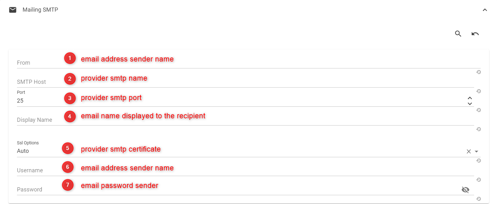
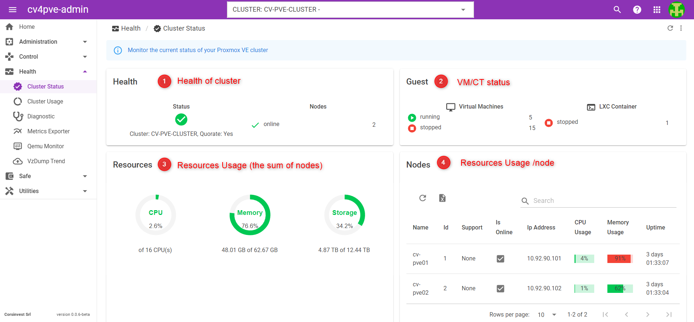
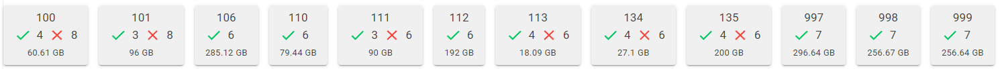
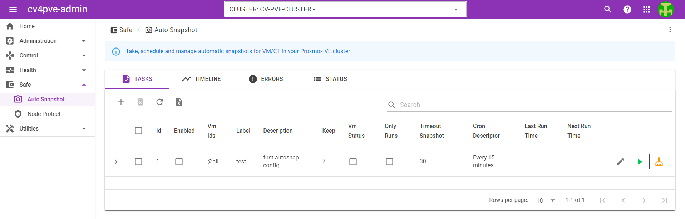

1. Introduction

The easiest and most effective solution to monitor your multiple Proxmox VE cluster in a single web portal.
cv4pve-admin boost your Proxmox VE infrastructure.
One of the main design goals was to make use as simple as possible. You can use cv4pve-admin for a single node or cluster of many nodes. All management tasks can be performed using web-based management interface and even a novice user can set up and install cv4pve-admin in minutes.
1.1. Why
The reason that led us to develop cv4pve-admin for Proxmox VE is:
-
The lack of functionality we need
-
The desire to facilitate the management of infrastructures to the IT Manager
Example:
- How do we know if backups have been successful? And their execution times? How much do they occupy?
-
Everything is clearly written in the log.
- How do I know if jobs come overlap? How much is the load?
-
The log contains the dates and durations and on which host it is running.
- How can I see occupancy of a VM at the storage level?
-
Go to VM - Check storage - Check backups
- Would I like to take snapshots every 15 minutes?
-
it is not possible
We have implemented simple solutions to get information immediately and in a simple way.
1.2. Web-Based
cv4pve-admin is simple to use. Management tasks can be performed through the included web-based management interface – there is no need to install a separate management tool.
1.3. Benefits
-
Fast installation and easy-to-use
-
Web-based management interface
-
Low administration costs and simple deployment
-
Manage multiple clusters in a single installation
1.4. Project
The project started in 2016, with command line cv4pve-tools. The tools are Open Source on the site GitHub and are still maintained today. Initially we used shell commands inside Proxmox VE. We immediately understood the fragility of the system.
We have developed the API for various languages (C#, Java, Php, JavaScript, Power Shell and more) and then we have re-implemented all the tools. This gave us the ability to be independent from the internal modifications of Proxmox VE, and made it possible to run outside of Proxmox VE.
The GUI version started 2019. https://www.corsinvest.it/cv4pve-admin
1.5. Corsinvest
Corsinvest Srl ❤️ Open Source, believes in Open Source and in the community. All this brings an immense added value.
2. How to install
cv4pve-admin is an application developed in .Net.
2.1. PVE Requirements
The minimal version of Proxmox VE is 6.4.
2.2. PVE Permission
For connection to a cluster is require credential Web Api or Token Api. This require permission for execution. In this moment all permission is required.
2.3. AppSettings.json
The configurations are saved in appsettings.json.
Most important options are:
-
urls set the ip address and port to espose the web application 0.0.0.0 for all (default http://0.0.0.0:5000)
2.4. Binary/Docker Install
2.4.1. From binary repository
Download last release from Project Repository and unzip in the directory where you want it to run. Start application:
-
Windows .\Corsinvest.ProxmoxVE.Admin.exe
-
Linux/MaxOsX ./Corsinvest.ProxmoxVE.Admin
| For Linux/MaxOsX change permission |
chmod 777 /home/frank/cv4pve-admin/Corsinvest.ProxmoxVE.Admin
chmod -R 0755 /home/frank/cv4pve-admin/wwwrootLinux Configure Service
apt update && apt install unzip wget
cd /temp
wget https://github.com/Corsinvest/cv4pve-admin/releases/download/vXX.XX.XX/cv4pve-admin-linux-x64.zip
unzip /temp/cv4pve-admin-linux-x64.zip -d /var/cv4pve-admin
chmod 777 /var/cv4pve-admin/Corsinvest.ProxmoxVE.Admin
chmod -R 0755 /var/cv4pve-admin/wwwrootCreate a service file /etc/systemd/system/cv4pve-admin.service
Copy the following configuration in that file and it will run our application,
[Unit]
Description=cv4pve-admin Web Application
[Service]
WorkingDirectory=/var/cv4pve-admin
ExecStart=/var/cv4pve-admin/Corsinvest.ProxmoxVE.Admin
Restart=always
RestartSec=10
SyslogIdentifier=cv4pve-admin
User=www-data
Environment=ASPNETCORE_ENVIRONMENT=Production
[Install]
WantedBy=multi-user.targetNow start the service. Instead of the service name in the below commands use the name of the file made above,
systemctl enable cv4pve-admin
systemctl start cv4pve-adminNow your proxy server and kestrel server is running and you can access your application through any ip with port 5001.
To redeploy the code your need to replace the dll and stop and start your service again through the following commands
sudo systemctl stop cv4pve-admin
sudo systemctl start cv4pve-adminNow I expect the cv4pve-admin is running and you can access your application through any ip with port 5000. The web interface can be reached via https://youripaddress:5000 (default login is: admin@local, and the password is Password123!).
2.4.2. Docker
cv4pve-admin is an application developed in .Net. For deploy is used Docker image.
2.5. How to Update
2.5.1. From binary repository
Stop application Save the data directory and appsettings.json. Download latest release from Project Repository and unzip in previous directory installation. Restore data directory and appsettings.json.
2.5.2. Docker
See Docker image
3. GUI
cv4pve-admin is simple. There is no need to install a separate management tool, and everything can be done through your web browser (Latest Firefox or Google Chrome is preferred).
You can use the web-based administration interface with any modern browser.
3.1. Login
The web interface can be reached via https://youripaddress:5000 (default login is: admin@local, and the password is Password123!)
3.2. Overview
The cv4pve-admin user interface consists of three regions.
| Header |
On top. Shows status information and contains buttons for most important actions. |
| Modules tree |
At the left side. A navigation tree where you can select specific module. |
| Content Panel |
Center region. Selected module display content. |
| You can reduce and expand the size of the tree. This can be useful when you work on small screens and want more space to view other content. |
3.2.1. Header
At the top left, the button to expand and reduce the tree or view modules if listed. Next to the module name.
The rightmost part of the header contains four buttons:
| Cluster Selector |
Cluster selector. |
- Notify
-
Notify service activity.
- Help
-
Opens a new browser window showing the reference documentation.
- User menu
-
actions for user.
3.2.2. Modules tree
This is the main navigation tree. It is divided into contexts and contains all the available modules.
3.2.3. Content Panels
When you select a module in the tree, the corresponding shows status information in the content. Refer to the individual chapters of the modules within the reference documentation for more detailed information.
3.3. Settings/Options
When you select a module in the tree, the corresponding shows status information in the content. Refer to the individual chapters of the modules within the reference documentation for more detailed information.
3.3.1. cv4pve-admin
Manage your cluster: insert Description, IP and Credentials.
|

3.3.2. Localization
Manage app language
3.3.3. Mailing SMTP
Mailing SMTP

3.3.4. MudBlazor UI
Change the default app theme color and switch to dark mode
3.3.5. Security
Manage all the security app settings
3.3.6. Notification
For notification email or other type, is posable to configure it in section NOTIFICATION
3.3.7. Apps
Configure all application settings in the app: cron, alert limits, notification channels, and retention
3.4. How to Setup a cluster
cv4pve-admin supports multiple clusters configurations. For identify cluster is possible add a description.
3.4.1. Api Login or Api Token
3.4.2. SSH Login
3.4.3. IP and Port
4. Modules
4.1. Home
Summarize the situation of your cluster in a few boxes. Each section is clickable.
4.2. Administration
Monitor jobs in the background with HangFire. Enable/Disable modules and keep track of sessions.
4.3. Control
4.3.1. Telegram Bot
Full Control of your cluster directly by Telegram. Visit  Telegram Bot Step By Step to see how to set up your bot.
Telegram Bot Step By Step to see how to set up your bot.
|

4.4. Health
4.4.1. Cluster Status
365° Real time status of your Proxmox VE Cluster.

4.4.2. Cluster Usage
Show all the storages configured in cluster.
By Storage
By VM/CT
By Costs
4.4.3. Diagnostic
Take, schedule and manage automatic diagnostic for your Proxmox VE cluster, it helps to find out some hidden problems.
4.4.5. Qemu Monitor
Proxmox VE does not allow the operating system to view IOPS for VM. With this it is easy to identify the virtual machines and solve the problem
4.4.6. VZDump Trend
Check the progress of the vzdump backup set by Proxmox VE and check status, show more info

List of scheduled jobs
Speed Trend
List of not scheduled jobs
List of disks don’t backed up
Check the storage backups occupation

4.5. Safe
4.5.1. Automatic Snapshots
Take a snapshot of a VM/CT at a fixed interval with a retention.
Implementation
We started in 2016 with command line development https://github.com/Corsinvest/cv4pve-autosnap[Github] and then implemented the web portal.
Note
| Do not schedule less than 15 minutes, there may be performance problems. |
| If you include memory, the space and time will increase considerably. Test it before deploying to production environment. |
| Pay attention to the timeout time. |
| The location of the autosnap storage space is the same where the VM disk is located. This reduces the total storage capacity. |
Tasks
Grid with tasks configured.

New and edit Task
Edit Hook
The environments are replace with values.
Example for InfluxDb for cv4pve-autosnap
| Url | |
| Data |
cv4pve-autosnap,vmid=%CV4PVE_AUTOSNAP_VMID%,type=%CV4PVE_AUTOSNAP_VMTYPE%,label=%CV4PVE_AUTOSNAP_LABEL%,vmname=%CV4PVE_AUTOSNAP_VMNAME%,success=%CV4PVE_AUTOSNAP_STATE% success=%CV4PVE_AUTOSNAP_STATE%,duration=%CV4PVE_AUTOSNAP_DURATION% |
Status
Show status
History
Show History
Timeline
Show Scheduling Timeline
Status
Show Scheduling status
In Error
Show Errors
4.5.2. Node Protect
Save your configurations in case of disaster recovery.
Description
Proxmox VE perfectly performs VM/CT backups. The rest of the system configurations are not saved. E.G. /etc/pve or information cluster
Implementation
We started in 2019 with command line development https://github.com/Corsinvest/cv4pve-node-protect[Github] and then implemented the web portal.
General
4.6. Utilities
4.6.1. Disk Status
Monitor all the disks in your cluster in one screen. Keep track of performance.
Requirement on every nodes ledmon.
apt-get install ledmonNodes

Disks Information
S.M.A.R.T. tools information
4.6.2. Node Free Memory
Free up the node’s memory space in case of error: "out of memory" or "kvm: failed to initialize KVM: Cannot allocate memory"
Description
Free the memory of the nodes to start a VM without using a shell. The message that is displayed
| "kvm: failed to initialize KVM: Cannot allocate memory" |
General
4.6.3. VM UNLOCK
Unlock VM/CT that have remained in the "locked" status
Description
Unlock VM/CT that are in a locked state without using the shell
General
5. Other
5.1. Cron
5.1.1. Cron format
Cron expression is a mask to define fixed times, dates and intervals. The mask consists of second (optional), minute, hour, day-of-month, month and day-of-week fields. All of the fields allow you to specify multiple values, and any given date/time will satisfy the specified Cron expression, if all the fields contain a matching value.
Allowed values Allowed special characters Comment ┌───────────── second (optional) 0-59 * , - / │ ┌───────────── minute 0-59 * , - / │ │ ┌───────────── hour 0-23 * , - / │ │ │ ┌───────────── day of month 1-31 * , - / L W ? │ │ │ │ ┌───────────── month 1-12 or JAN-DEC * , - / │ │ │ │ │ ┌───────────── day of week 0-6 or SUN-SAT * , - / # L ? Both 0 and 7 means SUN │ │ │ │ │ │ * * * * * *
Base characters
In all fields you can use number, * to mark field as any value, - to specify ranges of values. Reversed ranges like 22-1(equivalent to 22,23,0,1,2) are also supported.
It’s possible to define step combining / with *, numbers and ranges. For example, */5 in minute field describes every 5 minute and 1-15/3 in day-of-month field – every 3 days from the 1st to the 15th. Pay attention that */24 is just equivalent to 0,24,48 and */24 in minute field doesn’t literally mean every 24 minutes it means every 0,24,48 minute.
Concatenate values and ranges by ,. Comma works like OR operator. So 3,5-11/3,12 is equivalent to 3,5,8,11,12.
In month and day-of-week fields, you can use names of months or days of weeks abbreviated to first three letters (Jan-Dec or Mon-Sun) instead of their numeric values. Full names like JANUARY or MONDAY aren’t supported.
For day of week field, both 0 and 7 stays for Sunday, 1 for Monday.
| Expression | Description |
|---|---|
* * * * * |
Every minute |
0 0 1 * * |
At midnight, on day 1 of every month |
*/5 * * * * |
Every 5 minutes |
30,45-15/2 1 * * * |
Every 2 minute from 1:00 AM to 01:15 AM and from 1:45 AM to 1:59 AM and at 1:30 AM |
0 0 * * MON-FRI |
At 00:00, Monday through Friday |
Special characters
Most expressions you can describe using base characters. If you want to deal with more complex cases like the last day of month or the 2nd Saturday use special characters:
L stands for "last". When used in the day-of-week field, it allows you to specify constructs such as the last Friday (5L`or `FRIL). In the day-of-month field, it specifies the last day of the month.
W in day-of-month field is the nearest weekday. Use W with single value (not ranges, steps or *) to define the nearest weekday to the given day. In this case there are two base rules to determine occurrence: we should shift to the nearest weekday and can’t shift to different month. Thus if given day is Saturday we shift to Friday, if it is Sunday we shift to Monday. But if given day is the 1st day of month (e.g. 0 0 1W * *) and it is Saturday we shift to the 3rd Monday, if given day is last day of month (0 0 31W 0 0) and it is Sunday we shift to that Friday. Mix L (optionally with offset) and W characters to specify last weekday of month LW or more complex like L-5W.
# in day-of-week field allows to specify constructs such as second Saturday (6#2 or SAT#2).
? is synonym of *. It’s supported but not obligatory, so 0 0 5 * ? is the same as 0 0 5 * *.
| Expression | Description |
|---|---|
0 0 L * * |
At 00:00 AM on the last day of the month |
0 0 L-1 * * |
At 00:00 AM the day before the last day of the month |
0 0 3W * * |
At 00:00 AM, on the 3rd weekday of every month |
0 0 LW * * |
At 00:00 AM, on the last weekday of the month |
0 0 * * 2L |
At 00:00 AM on the last tuesday of the month |
0 0 * * 6#3 |
At 00:00 AM on the third Saturday of the month |
0 0 ? 1 MON#1 |
At 00:00 AM on the first Monday of the January |
Specify Day of month and Day of week
You can set both day-of-month and day-of-week, it allows you to specify constructs such as Friday the thirteenth. Thus 0 0 13 * 5 means at 00:00, Friday the thirteenth.
It differs from Unix crontab and Quartz cron implementations. Crontab handles it like OR operator: occurrence can happen in given day of month or given day of week. So 0 0 13 * 5 means at 00:00 AM, every friday or every the 13th of a month. Quartz doesn’t allow specify both day-of-month and day-of-week.
Macro
A macro is a string starting with @ and representing a shortcut for simple cases like every day or every minute.
| Macro | Equivalent | Comment |
|---|---|---|
@every_second |
* * * * * * |
Run once a second |
@every_minute |
* * * * * |
Run once a minute at the beginning of the minute |
@hourly |
0 * * * * |
Run once an hour at the beginning of the hour |
@daily |
0 0 * * * |
Run once a day at midnight |
@midnight |
0 0 * * * |
Run once a day at midnight |
@weekly |
0 0 * * 0 |
Run once a week at midnight on Sunday morning |
@monthly |
0 0 1 * * |
Run once a month at midnight of the first day of the month |
@yearly |
0 0 1 1 * |
Run once a year at midnight of 1 January |
@annually |
0 0 1 1 * |
Run once a year at midnight of 1 January |
Cron grammar
Cronos parser uses following case-insensitive grammar:
cron :: expression | macro
expression :: [second space] minute space hour space day-of-month space month space day-of-week
second :: field
minute :: field
hour :: field
day-of-month :: '*' step | lastday | value [ 'W' | range [list] ] | '?'
month :: field
day-of-week :: '*' step | value [ dowspec | range [list] ] | '?'
macro :: '@every_second' | '@every_minute' | '@hourly' | '@daily' | '@midnight' | '@weekly' | '@monthly' | '@yearly' | '@annually'
field :: '*' step | value [range] [list] | '?'
list :: { ',' value [range] }
range :: '-' value [step] | [step]
step :: '/' number
value :: number | name
name :: month-name | dow-name
month-name :: 'JAN' | 'FEB' | 'MAR' | 'APR' | 'MAY' | 'JUN' | 'JUL' | 'AUG' | 'SEP' | 'OCT' | 'NOV' | 'DEC'
dow-name :: 'SUN' | 'MON' | 'TUE' | 'WED' | 'THU' | 'FRI' | 'SAT'
dowspec :: 'L' | '#' number
lastday :: 'L' ['-' number] ['W']
number :: digit | number digit
space :: ' ' | '\t'5.1.2. Daylight Saving Time
Cronos is the only library to handle daylight saving time transitions in intuitive way with the same behavior as Vixie Cron (utility for *nix systems). During a spring transition, we don’t skip occurrences scheduled to invalid time during. In an autumn transition we don’t get duplicate occurrences for daily expressions, and don’t skip interval expressions when the local time is ambiguous.
Transition to Summer time (in spring)
During the transition to Summer time, the clock is moved forward, for example the next minute after 01:59 AM is 03:00 AM. So any daily Cron expression that should match 02:30 AM, points to an invalid time. It doesn’t exist, and can’t be mapped to UTC.
Cronos adjusts the next occurrence to the next valid time in these cases. If you use Cron to schedule jobs, you may have shorter or longer intervals between runs when this happen, but you’ll not lose your jobs:
"30 02 * * *" (every day at 02:30 AM)
Mar 13, 02:30 +03:00 – run
Mar 14, 03:00 +04:00 – run (adjusted)
Mar 15, 02:30 +04:00 – runTransition from Summer time (in autumn)
When Daylight Saving Time ends you set the clocks backward so there is duration which repeats twice. For example, after 01:59 AM you get 01:00 AM again, so the interval between 01:00 AM to 02:00 AM (excluding) is ambiguous, and can be mapped to multiple UTC offsets.
We don’t want to have multiple occurrences of daily expressions during this transition, but at the same time we want to schedule interval expressions as usually, without skipping them. So we have different behavior for different Cron expressions.
Interval expression
Cron expression is interval based whose second, minute or hour field contains *, ranges or steps, e.g. 30 * * * * (hour field), * 1 * * * (minute field), 0,5 0/10 1 * * *. In this case there are expectations that occurrences should happen periodically during the day and this rule can’t be broken by time transitions. Thus for interval based expressions occurrences will be before and after clock shifts.
Consider */30 * * * * interval expression. It should occur every 30 minutes no matter what.
5.2. Commands
When you have to specify what VM/CT insert inside a job you have these methods:
-
comma separated (100,101,102,TestDebian,VMName)
-
range (100:107)
-
poolname (@pool-test)
-
tagname (@tag-test)
-
nodename (@node-nodename)
-
every object of your host (@all-nodename)
-
every object of your cluster (@all)
If you have to exclude some VMs or Containers just put the "-" sign in front of the ID/Name:
-
-vmid or -name (-200,-TestUbuntu)
Mixed example:
100,101,102,-103,104,vmtest,-containertest
5.3. Frequently Asked Questions
| New FAQs are appended to the bottom of this section. |
-
Roadmap
-
Release notes
6. Support
6.1. Subscription
6.1.1. Commercial Support
Corsinvest Srl offers enterprise support available as Subscription Service Plans. All users with a subscription get access to the cv4pve-admin Customer Portal. The customer portal provides help and support with guaranteed response times from the cv4pve-admin developers.